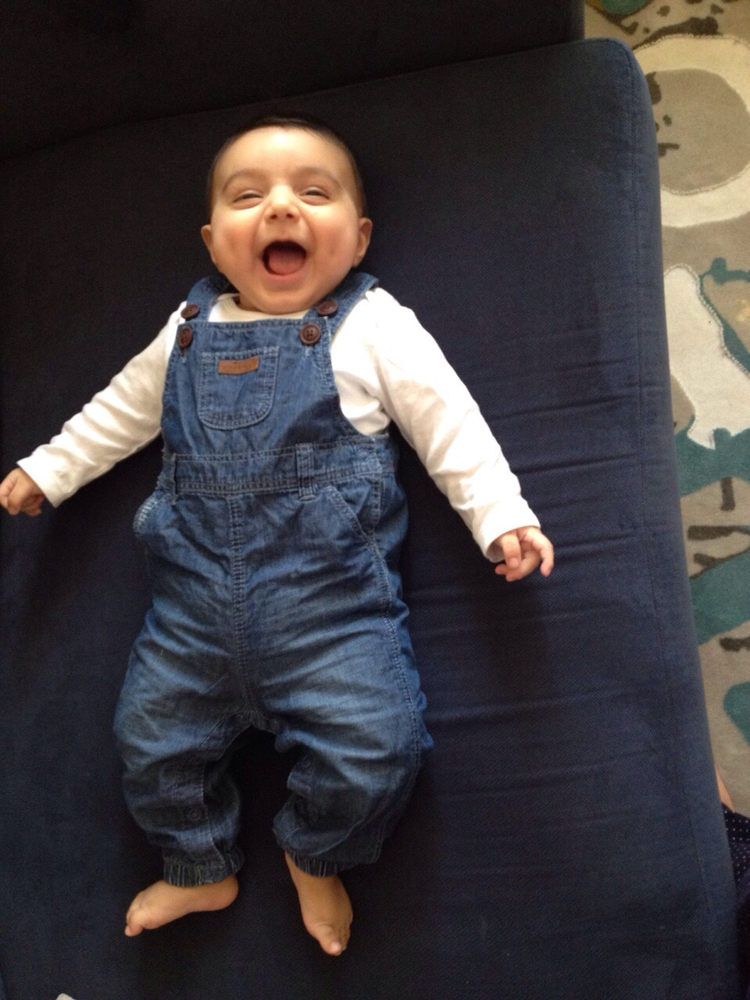
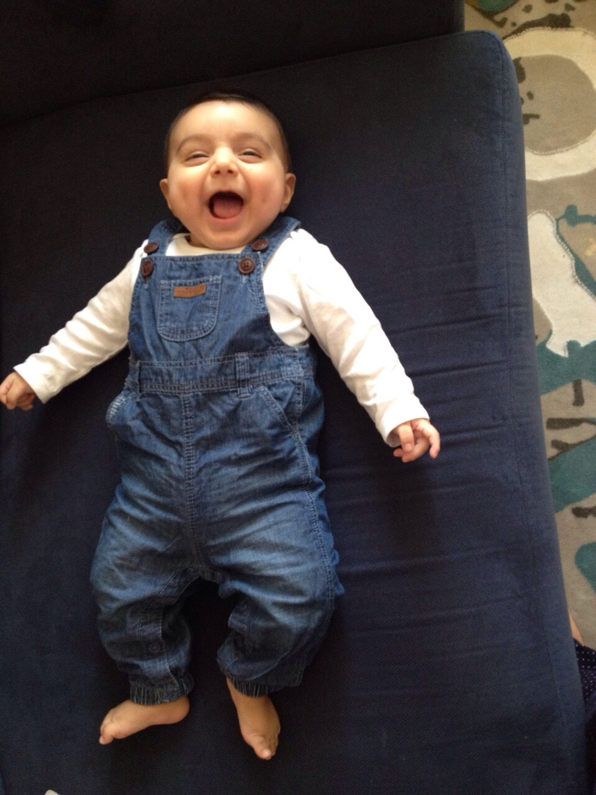
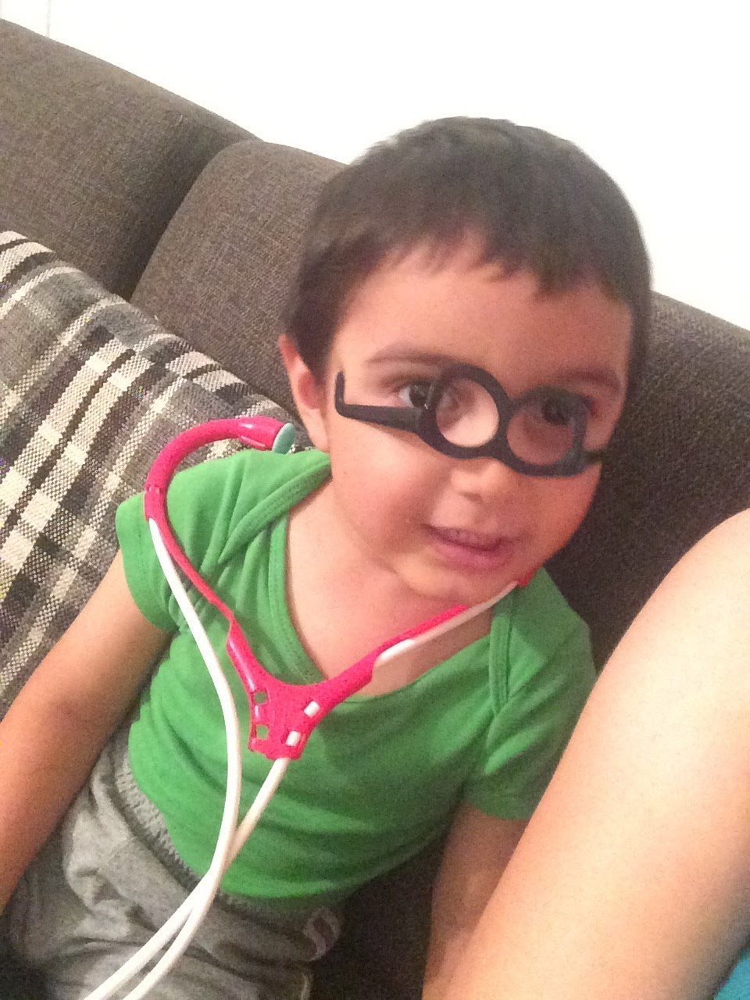
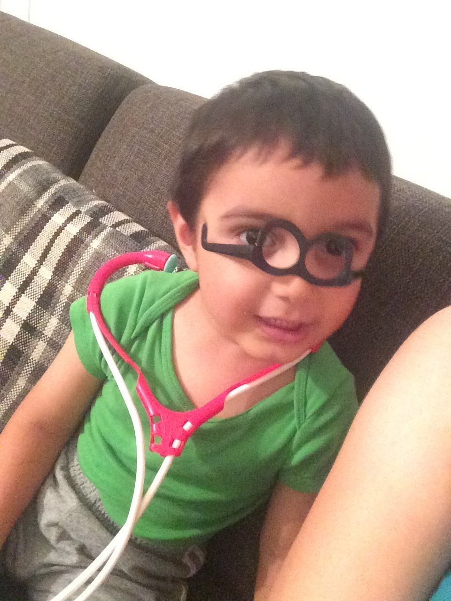
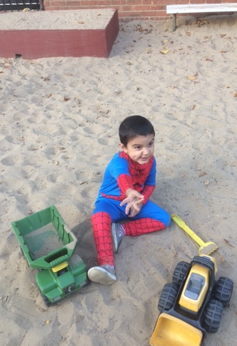
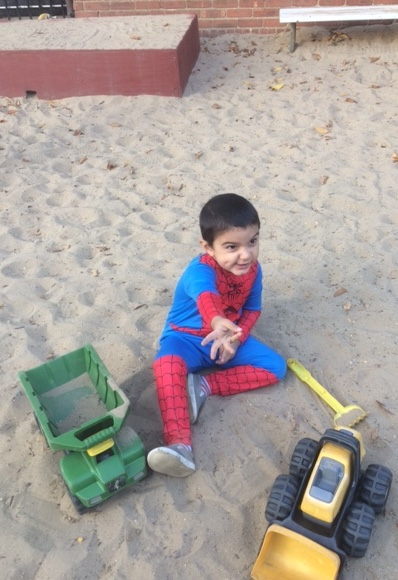

E. CIVAN'S PHOTO COLLAGE
From October 17, 2014 to present
You won't remember any of these precious memories. You won't remember, but I will... and I'll hold all the memories in my heart for the both of us
 



 

 
